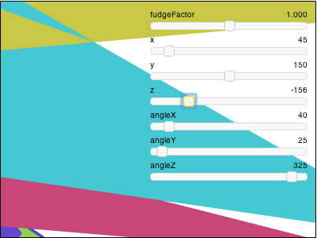

WebGL 3D Perspective
This post is a continuation of a series of posts about WebGL. The first started with fundamentals and the previous was about 3d basics.. If you haven't read those please view them first.
In the last post we went over how to do 3D but that 3D didn't have any perspective. It was using what's called an "orthographic" view which has its uses but it's generally not what people want when they say "3D".
Instead we need to add perspective. Just what is perspective? It's basically the feature that things that are further away appear smaller.

Looking at the example above we see that things further away are drawn smaller. Given our current sample one easy way to make it so that things that are further away appear smaller would be to divide the clipspace X and Y by Z.
Think of it this way: If you have a line from (10, 15) to (20,15) it's 10 units long. In our current sample it would be drawn 10 pixels long. But if we divide by Z then for example if Z is 1
10 / 1 = 10 20 / 1 = 20 abs(10-20) = 10
it would be 10 pixels long, If Z is 2 it would be
10 / 2 = 5 20 / 2 = 10 abs(5 - 10) = 5
5 pixels long. At Z = 3 it would be
10 / 3 = 3.333 20 / 3 = 6.666 abs(3.333 - 6.666) = 3.333
You can see that as Z increases, as it gets further away, we'll end up drawing it smaller. If we divide in clipspace we might get better results because Z will a smaller number (-1 to +1). If we add a fudgeFactor to multiply Z before we divide we can adjust how much smaller things get for a given distance.
Let's try it. First let's change the vertex shader to divide by Z after we've multiplied it by our "fudgeFactor".
<script id="2d-vertex-shader" type="x-shader/x-vertex">
...
uniform float u_fudgeFactor;
...
void main() {
// Multiply the position by the matrix.
vec4 position = u_matrix * a_position;
// Adjust the z to divide by
float zToDivideBy = 1.0 + position.z * u_fudgeFactor;
// Divide x and y by z.
gl_Position = vec4(position.xy / zToDivideBy, position.zw);
}
</script>
Note, because Z in clipspace goes from -1 to +1 I added 1 to get zToDivideBy to go from 0 to +2 * fudgeFactor
We also need to update the code to let us set the fudgeFactor.
...
var fudgeLocation = gl.getUniformLocation(program, "u_fudgeFactor");
...
var fudgeFactor = 1;
...
function drawScene() {
...
// Set the fudgeFactor
gl.uniform1f(fudgeLocation, fudgeFactor);
// Draw the geometry.
gl.drawArrays(gl.TRIANGLES, 0, 16 * 6);
And here's the result.
click here to open in a separate window
If it's not clear drag the "fudgeFactor" slider from 1.0 to 0.0 to see what things used to look like before we added our divide by Z code.

I'll be honest, I'm having a hard time thinking how to explain the next few steps so here goes.
It turns out WebGL takes the x,y,z,w value we assign to gl_Position in our vertex shader and divides it by w automatically.
We can prove this very easily by changing the shader and instead of doing the
division ourselves, put zToDivideBy in gl_Position.w.
<script id="2d-vertex-shader" type="x-shader/x-vertex">
...
uniform float u_fudgeFactor;
...
void main() {
// Multiply the position by the matrix.
vec4 position = u_matrix * a_position;
// Adjust the z to divide by
float zToDivideBy = 1.0 + position.z * u_fudgeFactor;
// Divide x, y and z by zToDivideBy
gl_Position = vec4(position.xyz, zToDivideBy);
}
</script>
and see how it's pretty much the same.
click here to open in a separate window
We've still got a least 1 problem. On the sample above use the slider and set Z to something like -156. You should see something like this

What's going on? What's happening is our geometry is getting transformed into negative space. The Z values are becoming negative but only some of them and so parts of the our geometry is getting put on the opposite side of the screen. If you follow the math, the points of our geometry that are on the left will get transformed to the right and visa versa when they become negative.
We can fix this by moving our Z clipspace. Right now it represents pixel units from -400 to +400. If you remember from the last article our projection math looks like this:
function make2DProjection(width, height, depth) {
// Note: This matrix flips the Y axis so 0 is at the top.
return [
2 / width, 0, 0, 0,
0, -2 / height, 0, 0,
0, 0, 2 / depth, 0,
-1, 1, 0, 1,
];
}
We can change it to be say 50 to +400 by changing it to this
Next up we'd like to be able to choose the clipping range for Z. Right now were multiplying Z in pixel units by some number to get it to clipspace, then we're dividing it again by some number called zToDivideBy. I have no idea what that range really works out to.
Finally instead of of using "fudgeFactor" to decide how much perspective there is we'd like to use some "field of view" angle which would be much more intuitive.
Well, like everything else up to this point we can do this with more matrix math magic.
Here's a function to build the matrix
function makePerspective(angleInRadians, aspect, near, far) {
var f = Math.tan(Math.PI * 0.5 - 0.5 * angleInRadians);
var rangeInv = 1.0 / (near - far);
return [
f / aspect, 0, 0, 0,
0, f, 0, 0,
0, 0, (near + far) * rangeInv, -1,
0, 0, near * far * rangeInv * 2, 0
];
};
This matrix will do all our conversions for us. It will adjust the units so they are in clipspace, it will do the math so that we can choose a field of view by angle and it will let us choose our z-clipping space.
To use it we just need to replace our old call to make2DProjection with a call to makePerspective
var aspect = canvas.width / canvas.height;
var projectionMatrix =
makePerspective(fieldOfViewRadians, aspect, 0.001, 2000);
var translationMatrix =
makeTranslation(translation[0], translation[1], translation[2]);
var rotationXMatrix = makeXRotation(rotation[0]);
var rotationYMatrix = makeYRotation(rotation[1]);
var rotationZMatrix = makeZRotation(rotation[2]);
var scaleMatrix = makeScale(scale[0], scale[1], scale[2]);
We can set our shader back to being very simple
<script id="2d-vertex-shader" type="x-shader/x-vertex">
...
void main() {
// Multiply the position by the matrix.
gl_Position = u_matrix * a_position;
...
}
</script>
There are 2 issues So that worked but generally we don't want just a 'fudgeFactor' to decide how much to divide by Z. Instead we want to decide on the "field of view". We can compute a fudgeFactor from an angle like this
fudgeFactor = -Math.tan(Math.PI * 0.5 - 0.5 * fieldOfViewInRadians
Let's try it.
click here to open in a separate window
x = x * f +
y * 0
z * 0
w * 0;
y = x * 0 +
y * f +
z * 0 +
w * 0;
z = x * 0 +
y * 0 +
z * (near + far) * rangeInv
w * (near * far * rangeInv * 2)
w = x * 0 +
y * 0 +
z * -1 +
w * 0